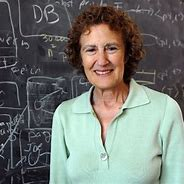
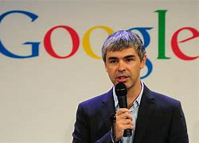

-
- Considered father of modern computer science. Famous for developing the first modern computers and decoding the German
enigma. In 1936, he published a paper that is now recognised as the foundation of computer science. In 1946,
he designed the automatic computing engine. In 1950, he published a philosophical paper including the idea of an
imitation game which was named the turing test.
Want to Know More? All about Alan Turing Visit this Amazing Website to learn all about Alan Turing
-
- Barbara Liskov

- She is a pioneer in the design of computing programming languages. In 1970, she began her work with data abstraction.
She is known for designing CLU an Argus which are both programming languages. CLU and Argus would contribute to Java,
Ada, and C# and C++.
Want to Know More? All About Barbara Liskov Visit this Amazing Website to learn all about Barbara Liskov
-

- He designed and created google the search engine. The name Google is derived from the misspelling the word googol
which is a mathematical term for the number 1 followed by a hundred zeros. Page along with Brin had founded google Inc.
by September 1998. Page stepped down from CEO post in 2001.
Want to Know More? All About Larry Page Visit this Amazing Website to learn all about Larry Page